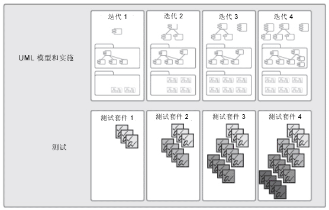

| 概念：持续关注质量 |
 |
|
讨论改善质量不是简单的“满足需求”或生产出满足用户需要和期望的产品。 质量还包括确定用于证明实现质量的度量和标准，以及实施一个流程以确保产品已达到所期望的质量水平并可重复和管理。 确保高质量需要的不仅仅是测试团队的参与；它还要求整个团结负责质量。它涉及了所有团队成员及生命周期的所有部分：
遇到质量问题时，每个团队成员应乐于参与进来以解决问题。 迭代式开发的主要好处之一是它使得可以及早地测试和持续地测试，如下所示。项目结束之前，因为最重要的功能很早就已经实现，最基本的软件可能已经启动且运行了数月，因此可能已对其进行数月的测试。大部分采用迭代式开发的项目声称，改善流程带来了切实的质量提高，这一点也不令人惊奇。 
测试尽早地启动并在每个迭代中扩展 递增构建应用程序时，我们还应递增构建测试自动化，以尽早地检测到缺陷，并将先期投资降到最低。在设计我们的系统时，我们需要考虑如何对其进行测试。 作出正确的设计决策可以极大地改善我们进行自动化测试的能力。我们可能还可以直接从设计模型生成测试代码。这样既省时间，又为早期测试提供了动力，还可以将测试软件中的错误数降到最低，从而提高测试的质量。自动化测试已成为很多灵活团体关注的主要领域（相对于其他测试），自动化测试的目的是将所有代码的测试自动化，并且测试在编写代码之前编写（测试优先设计）。 |
© Copyright IBM Corp. 1987, 2006. All Rights Reserved. |